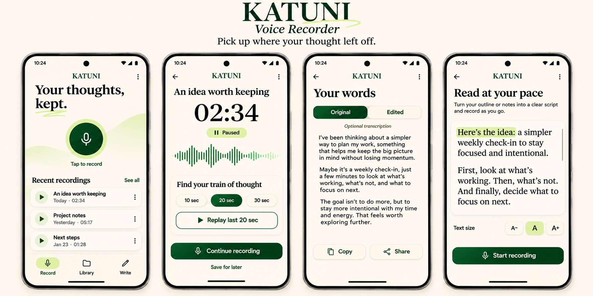

Android preview · No account needed · Record offline
That idea was going somewhere. Let’s keep it going.
Life happens. Your place stays.
9:41▰ ▰ ▰
‹KATUNI⋮
YOUR NEXT BIG IDEA
An idea worth keeping.
02:34
Paused
Find your train of thought.
10 sec20 sec30 sec
Replay last 20 sec
Continue recording
Save for later
Hear the last 20 seconds. Find your next sentence.
Product design concept
YOUR VOICE. YOUR PACE.Ideas & voice notesJournals & reflectionsScripts & narration
A LITTLE REPLAY. A LOT LESS STARTING OVER.
Back to your thought in a few seconds.
A call, a hello, a knock at the door. When you’re ready, your recording is ready too.
INTERACTIVE WALKTHROUGH Sample content
An idea worth keeping
02:34
Recording your thought…
“What if we made a little more room for the ideas that arrive in the middle of everything?”
An illustrative walkthrough. This page does not record your microphone.
A QUIETER WAY TO GET IT OUT
Keep the voice. Make room for the words.
01 / RECORD & REPLAY
Your next sentence starts with your last.
Choose a short replay, recover your train of thought, and continue at the end. Your earlier audio stays intact.
↶
An idea worth keepingLast 20 seconds Ready to replay
02:34
10 sec20 sec30 sec
02 / DICTATION
Speak it. Then shape it.
Dictate into an editable text draft using your Android speech provider. Copy or share when it feels right.
“Here’s the idea I wanted to come back to…”
Speech availability varies by device and language.
03 / SCRIPTS
Read at your own pace.
Keep your script beside the recorder. Adjust the text size and scroll whenever you’re ready.
Start with one thought. Give it some space. See where it takes you.
04 / OPTIONAL TRANSCRIPTION
Your words, with room to edit.
Connect a transcription server to turn a saved recording into text. Keep the original transcript separate from your edits.
OriginalEdited
I’ve been thinking about a simpler way to capture an idea before the rest of the day carries it away.
Requires server setup and your confirmation before upload.
FOR ALL THE “I’LL COME BACK TO THAT” MOMENTS
A place for unfinished thoughts.
↗
Take your audio with you.
Save a WAV file to Files or share it through Android’s share sheet.
⌑
Find the useful bits.
Add bookmarks. Search titles and stored transcripts. Return to a draft later.
◉
Stay in control.
Recording works offline. No account. Audio uploads only when you choose transcription.
Local recordings are removed if you uninstall the app or reset your phone. Export anything you want to keep.
MEET KATUNI
Less between you and your next thought.
Explore the visual direction: a calm recorder, useful replay, editable words, and a script at your pace.

Design mockups. Preview app screens may differ.
A FEW GOOD QUESTIONS
Before you press record.
What makes KATUNI different?
KATUNI puts pause, short replay, and continuing your recording at the center. It’s designed for the moment you return from an interruption and can’t remember your last point.
Does recording need the internet?
No. Recording, replay, drafts and WAV export work locally. Dictation depends on the Android speech provider and language installed on your phone; that provider may use the internet.
Is transcription built in?
The Android preview lets you configure an HTTPS transcription server and confirm each audio upload. The server’s operator selects any speech-to-text API and manages its credentials. Review the destination’s privacy practices before sending audio.
Can I download it from Google Play or the App Store?
There is no live store listing yet. An Android preview APK is available below for personal testing. iOS visuals are design templates for a future version.
What happens when a call interrupts me?
The preview requests a pause when Android reports audio-focus loss or microphone silencing. You manually continue when ready. Behavior still needs testing across real phones and call apps; use nonessential audio while evaluating it.
What does the preview cost?
This preview has no subscription or payment screen. If you configure a transcription server, you are responsible for its compute and hosting costs. Future commercial pricing has not been set.
YOUR NEXT THOUGHT IS WORTH KEEPING
Pick up where you left off.
Try the Android preview. Start with a thought, a pause, and a little replay.